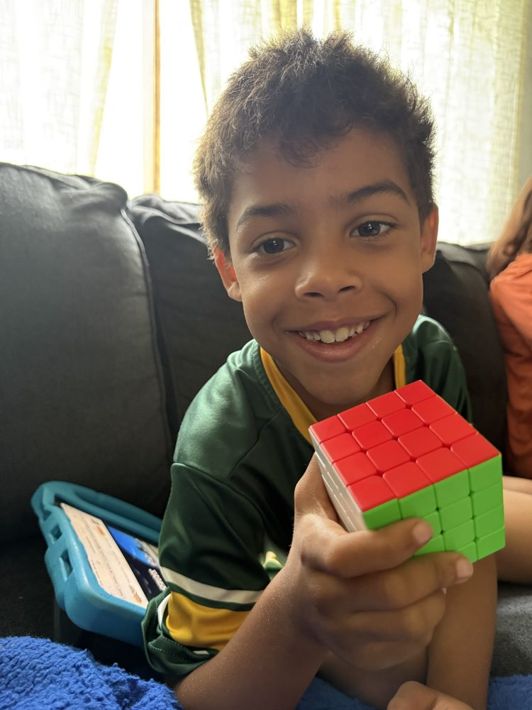
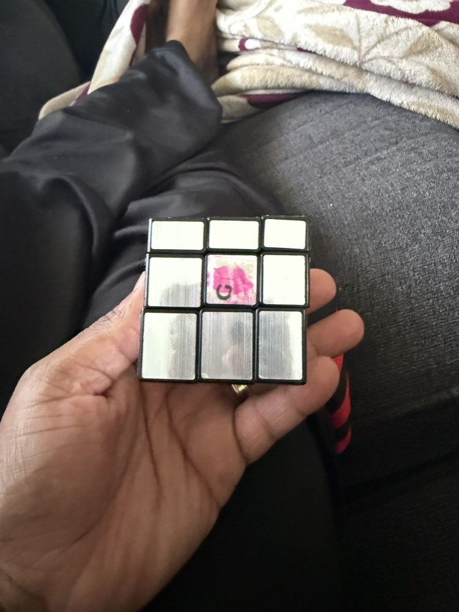

Learn the notation first
Every tutorial writes moves as letters (R, U, F and so on). Five minutes on the notation table saves an hour of confusion.
Solving Rubik's cubes and other twisty puzzles is one of Dr. Okolie's hobbies. These free tutorials take you from a scrambled puzzle to a solved one, step by step: four cubes, a pyramid, a 12-sided Megaminx and the shape-shifting Helicopter cube.
Dr. Okolie has used the Rubik's cube to explain complex topics, and he has delivered a talk titled Understanding Process Simulators with the Rubik's Cube, which compares working with a process simulator to solving a cube.
The two have a lot in common. A cube is a system of connected parts: turn one face and pieces on four other faces move with it. A process flowsheet works the same way, where changing one unit changes the streams going into the next. In both, it helps to break a big problem into stages, use a small set of tested moves, and check the state of the whole system after every step.
Solve one layer, then keep it safe while you work on the next.
Converge one unit operation, then connect it to the rest of the flowsheet.
Short, proven move sequences that change only what you want changed.
Validated unit models and solvers you can trust to behave the same way every time.
Each tutorial uses a beginner method with only a few algorithms to memorise. New to cubing? Start with the 2×2 or the 3×3.
The pocket cube. Corners only, three steps. The best place to start.
Start the tutorial →The classic Rubik's cube, solved layer by layer in seven steps.
Start the tutorial →The pyramid-shaped puzzle. Quick to learn with four short steps.
Start the tutorial →A 3×3 where every piece has a different size and all faces look the same.
Start the tutorial →The Rubik's Revenge. Reduce it to a 3×3, then handle parity.
Start the tutorial →A 12-sided dodecahedron. Solved like a 3×3, layer by layer, with more layers.
Start the tutorial →Turns around its edges and can jumble into non-cube shapes. Corners first, then centres.
Start the tutorial →

Every tutorial writes moves as letters (R, U, F and so on). Five minutes on the notation table saves an hour of confusion.
Hold the puzzle the same way for a whole algorithm. Most mistakes come from rotating the cube in the middle of a sequence.
Do each algorithm slowly until your hands remember it. Speed comes later, by itself.
Dr. Okolie offers personalised tutorials, and can send you a cube to practise on. Tell us which puzzle you are learning and where you are stuck.